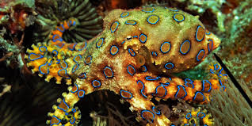

| Nom |
Prenom |
Espece |
Photo |
Fun fact |
Attributs |
| Jarre |
Jean-Michel |
Poulpe |
 |
La pieuvre est un terme introduit par Victor Hugo
Pieuvre désigne un poulpe
|
- 8 cerveaux
- 4 coeurs
- 1 Bec
|
| Crews |
Terry |
Demi-dieu |
 |
LUI |
|
| Curie |
Marie |
Elephant |

| Les éléphants adolescents sont délaissés par leur troupes parce qu'ils se conduisent mal. Ils reviennent quand ils sont plus grands. |
<3 |